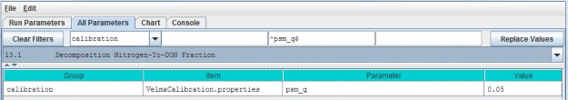
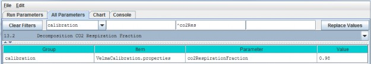
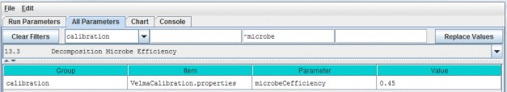
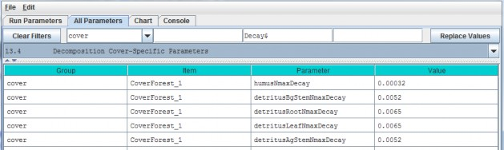

Decomposition
Decomposition of soil organic matter is a key process in VELMA, controlling the rate at which dead organicC and N pools (detritus and humus) are converted to inorganic C and N pools (CO2, NH4, NO3,DON and DOC).
VELMA v2.0 has a new decomposition model based on Potter et al. (1993). In the Potter model,microbially-mediated decomposition of plant and soil organic residues produces CO2, such that
CO2i = Ci * ki * Ws * Ts * (1-Me), where
- i = a specified soil organic matter pool (in VELMA, plant tissue detritus or humus)
- CO2i = carbon dioxide released by the decomposition of pool i
- Ci = carbon content (gC/m2) of pool i
- ki = maximum decay rate constant of pool i
- Ws = scalar constant (0-2.8) for the effect of soil moisture content on decomposition
- Ts = scalar constant (0-1) for the effect of temperature on decomposition
- Me = carbon assimilation efficiency (0 - 1) of microbes We made several modifications to the Potter model forVELMA v2.0:
- We modified the Potter decomposition equation, above, to apply it to detritus and humus N pools ratherthan C pools. The difference in the C/N ratios of donor and recipient pools are used to estimate total carbondecomposed. Specified fractions of the total carbon decomposed are converted to CO2 and DOC.Similarly, a specified fraction of total decomposed N is converted to DON.
- We replaced Potter's scalar constant for soil temperature (Ts) with a nonlinear function describing thefraction (0 - 1) of the maximum decay rate (Ki) versus soil temperature (oC, perlayer). See section 11.3 for a description of this nonlinear temperature function, which is also used in theplant N uptake subroutine.
- We replaced Potter's scalar constant for soil moisture (Ws) with a nonlinear function describingthe fraction (0 - 1) of the maximum decay rate (Ki) versus layer-specific soil moisture (v/v, per layer).Our soil moisture decomposition function uses a nonlinear Weibull function, which is the same as that applied tothe soil moisture N fixation function (see section 14.0).
"Appendix 1: Overview of VELMA's Leaf-Stem-Root (LSR) PlantBiomass Submodel" presents a conceptual diagram and equations describing pools and fluxes involved in thedecomposition subroutine for VELMA v2.0.
13.1 - Decomposition Nitrogen-To-DON Fraction
Select "13.1 Decomposition Nitrogen-To-DON fraction Plant Mortality Phenology" from the All Parameters drop-downmenu to specify a parameter value for controlling DON production:

Parameter Definitions
| Parameter Name | Parameter Description |
|---|---|
| psm_q | The fraction of decomposed nitrogen converted to DON range [0.0 - 1.0] |
Calibration Notes
You will need to iteratively calibrate "psm_q" against observed stream DON concentrations (Abdelnour et al.2013). This is most easily accomplished using VELMA's runtime visualization option for "Calibration AnnualNutrients". After annual results are in the ballpark, switch to "Calibration Daily Nutrients".
Reference:
Potter, C. S., Randerson, J. T., Field, C. B., Matson, P. A., Vitousek, P. M., Mooney, H. A., & Klooster, S.A. (1993). Terrestrial ecosystem production: a process model based on global satellite and surface data. GlobalBiogeochemical Cycles, 7(4), 811-841.
13.2 - Decomposition CO2 Respiration Fraction
Select "13.2 Decomposition CO2 Respiration Fraction" from the All Parameters drop-down menu to specify aparameter value controlling CO2 production during decomposition:

Parameter Definitions
| Parameter Name | Parameter Description |
|---|---|
| co2RespriationFraction | The fraction of humus decomposition (in Carbon) lost to the atmosphere as CO2. |
Calibration Notes
You will need to iteratively calibrate "co2RespriationFraction" in order to obtain a good fit betweensimulated and observed stream DOC concentrations, since DOC produced during decomposition = 1 -co2RespriationFraction. This is most easily accomplished using VELMA's runtime visualization option for"Calibration Annual Nutrients". After annual results are in the ballpark, switch to "Calibration DailyNutrients".
13.3 - Decomposition Microbe Efficiency
Select "13.3 Decomposition Microbe Efficiency" from the All Parameters drop-down menu to specify the microbialefficiency for carbon assimilation during decomposition:

Parameter Definitions
| Parameter Name | Parameter Description |
|---|---|
| microbeCefficiency | The carbon assimilation efficiency (0 - 1) of microbes. This is a globally-applicable term of the Potter equation. |
As an example, an assimilation efficiency = 0.45 means that for every gram of carbon decomposed, 0.45 g isassimilated into the humus carbon pool (microbes are not explicitly modeled), and the remaining 0.55 g isrespired as CO2. However, a small fraction (1 - co2RespriationFraction) of this 0.55 g goes to the DOCpool.
Consult the references below for insight into typical values for microbeCefficiency.
References:
Potter, C. S., Randerson, J. T., Field, C. B., Matson, P. A., Vitousek, P. M., Mooney, H. A., & Klooster, S.A. (1993). Terrestrial ecosystem production: a process model based on global satellite and surface data. GlobalBiogeochemical Cycles, 7(4), 811-841.
Herron, P. M., Stark, J. M., Holt, C., Hooker, T., & Cardon, Z. G. (2009). Microbial growth efficienciesacross a soil moisture gradient assessed using 13C-acetic acid vapor and 15N- ammonia gas. SoilBiology and Biochemistry, 41(6), 1262-1269.
13.4 - Decomposition Cover-Specific Parameters
Select "13.4 Decomposition Cover-Specific Parameters" from the All Parameters drop-down menu to specify themicrobial efficiency for carbon assimilation during decomposition. These parameters must be specified for eachcover type.

Parameter Definitions
| Parameter Name | Parameter Description |
|---|---|
| humusNmaxDecay | The maximum rate of decay (0 - 1) for the humus N pool. |
| detritusBgStemNmaxDecay | The maximum rate of decay (0 - 1) for the belowground stem (BgStem) N pool. |
| detritusRootNmaxDecay | The maximum rate of decay (0 - 1) for the root N pool. |
| detritusLeafNmaxDecay | The maximum rate of decay (0 - 1) for the leaf N pool. |
| detritusAgStemNmaxDecay | The maximum rate of decay (0 - 1) for the aboveground stem (AgStem) N pool. |
Calibration Notes
You will need to iteratively calibrate these decay constants, for each cover type, in order to obtain a good fitbetween simulated and observed detritus pool data. It is almost always best to calibrate for steady state(equilibrium) conditions, e.g., for mature cover types.